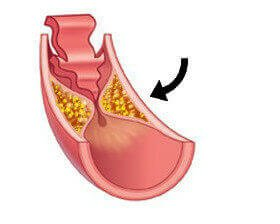
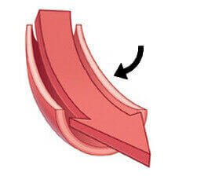
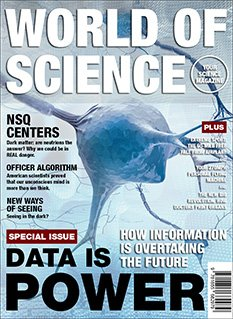

MOKSLININKAI: NUMESKITE SVORIO PRAĖJUS DVIEM VALANDOMS PO NAUDOJIMO!
Naujasis profesoriaus Fišerio atradimas įrodo, kad vienu metu galima
atsikratyti antsvorio ir didelio cholesterolio kiekio.
Specialistai teigia, kad vienos dozės pakanka numesti 2,5
kg. Profesorius Adamas Fišeris medicininiais bandymais įrodė, kad ši formulė tirpdo
riebalinį audinį vos per 120 minučių. Tuo pačiu metu ji pašalina cholesterolio
sluoksnius, kurie išplaunami iš arterijų. Taigi ji skatina lieknėjimą ir mažina visas
rimčiausias antsvorio pasekmes: padidėjusį cholesterolio kiekį, cukraus perteklių ir
medžiagų apykaitos sutrikimus.
Profesorius Fišeris sukūrė itin greitą, 100 % natūralią svorio metimo
formulę. Mokslo bendruomenėje – nuo genetikų ir specialistų iki
akademikų – visi mano, kad
tai yra svarbus įvykis kovoje su nutukimu. Įrodyta empiriniais, cheminiais ir klinikiniais
tyrimais.
Vien JAV ir Japonijoje profesoriaus formulę jau išbandė 9 000 žmonių. Apklausos ir pokalbiai
su vartotojais patvirtino, kad ji turi dvi savybes.
Ji yra 3 kartus greitesnė ir veiksmingesnė nei fiziniai pratimai ir mažo kaloringumo
dietos.
Ji mažina cholesterolio kiekį kraujyje ir gerina kraujotaką.
Žmonės, kurie numetė svorį padedami profesoriaus, atsikratė cholesterolio sankaupų
arterijose:
 Cholesterolio
sluoksniai blokuoja kraujotaką
 Kraujas teka įprastai
Sudeginate 2 kg riebalų ir sumažinate cholesterolio kiekį per 2 valandas po panaudojimo –
tai garantuotas poveikis, patvirtintas medicininiais duomenimis
Profesorius moksliškai paaiškina savo itin greito svorio metimo formulės poveikį:
„Efektyvumo paslaptis slypi ingredientuose. Aš naudojau unikalų medžiagų, skatinančių svorio
metimą ir cholesterolio naikinimą, derinį ir užregistravau jį patentų institute. Ji degina
riebalus 24 valandas per parą.
Svarbiausias ingredientas yra žalioji kava: tai natūrali medžiaga, kuri suaktyvina riebalų
deginimo procesą ir padeda greitai numesti svorio.
Formulėje esančios medžiagos pasiekia sritis, atsakingas už riebalinio audinio šalinimą, ir
veikia įvairiapusiškai.
Visų pirma, formulė priverčia organizmą iš karto pradėti deginti gliukozę,
t. y. cukrų, ir riebalus kepenyse. Be to, medicininiu požiūriu svarbiausia
yra tai, kad veikliosios medžiagos mažina cukraus absorbciją į kraują. Kai cukrus nesikaupia
kraujyje, nėra tikimybės, kad jis pavirs riebalais, nes būtent cukrus virsta riebalinėmis
ląstelėmis.
Tada formulė aktyviai valo venas ir arterijas dėl kraujyje esančių
antioksidantų. Jie jungiasi su toksinais ir cholesterolio dalelėmis naudojant peptidines
grandines, kurios vėliau pašalinamos iš kraujotakos.
Būtent šių trijų veiksmų sinergija degina riebalus ir tuo pačiu mažina cholesterolio kiekį.
Tai ne tik sumažina riebalų kiekį kraujyje, bet ir pašalina pavojingiausias antsvorio
pasekmes: padidėjusį cholesterolio kiekį, cukraus perteklių ir medžiagų apykaitos
sutrikimus“.
Dėmesio: pasikliaukite tik patikrintais metodais

Žurnalas „World of Science“ profesoriaus metodą pavadino didžiausiu 2015 metų medicinos
atradimu.
Moksle nėra vietos atsitiktinumui. Čia nėra vietos pažadams. Tik rezultatai kalba patys už
save. Būtent todėl profesorius Fišeris sukūrė specialų klinikinį testą, kuris patvirtino,
kad norint numesti svorio ir sumažinti „blogojo“ cholesterolio kiekį pakanka vos
dviejų valandų.
Tyrimuose dalyvavo 122 žmonės nuo 23 iki 65 metų. Dalyviai kasdien laikėsi dietos, kurią
apibūdino kaip daug riebalų ir cholesterolio turinčią mitybą. Bandymo tikslas buvo įrodyti,
kad profesoriaus sukurta svorio metimo formulė iš tiesų užtikrina svorio ir cholesterolio
kiekio mažėjimą. Be specialių dietų ar fizinių pratimų. Pateikiame rezultatus:
Dokumentuoti 4 savaičių terapijos pagal profesoriaus Fišerio metodą rezultatai, paskelbti
medicinos žurnale „Lipids in Health & Disease“:
Remdamiesi apklausos rezultatais, tyrėjai apskaičiavo, kad dalyviai per 30 dienų
vidutiniškai numetė 14,57 kg.
Dalyvių kraujo tyrimai parodė, kad jų „blogojo“ cholesterolio (MTL) kiekis sumažėjo 60
vienetų.
Tyrimai parodė preparato naudą arterijoms.
Pacientų KMI sumažėjo vidutiniškai 6,55 punkto.
Terapijos procesas pagal tyrimo dokumentaciją*
*Redaktoriaus pastaba: originalus tekstas išsaugotas. Pacientų duomenys buvo ištrinti
siekiant apsaugoti jų privatumą.
Pirma savaitė
Aš atėjau atlikti tyrimų, nes bijojau dėl savo sveikatos. Jau po
pirmųjų dviejų valandų pajutau pirmąjį poveikį. Turėjau daugiau energijos ir
nesijaučiau alkana.
Po dviejų dienų vis dar jaučiausi puikiai ir beveik negalvojau
apie maistą. Buvau labiau atsipalaidavusi ir pailsėjusi, nes pradėjusi terapiją tiek
daug nerimauti dėl savo sveikatos.
Po šešių dienų užlipau ant svarstyklių. Rezultatas: minus 3 kg!
Pirmą kartą po daugelio metų svėriau mažiau nei 80 kg!
Trečia savaitė
Jaučiuosi geriau nei bet kada anksčiau. Turiu daugiau energijos
ir geriau miegu, galbūt todėl, kad nebejaučiu streso galvodama apie antsvorį ir jo
sukeliamas problemas. Esu atsipalaidavusi ir numečiau dar 5 kilogramus. Iš viso per
3 savaites numečiau 10 kg, tai yra 476 gramai per dieną.
Numesti 10 kilogramų - tai didelis palengvėjimas mano sąnariams
ir nugarai. Daugiau jokio skausmo ir streso!
Ketvirta savaitė
Ketvirtąją savaitę buvo atlikti paskutiniai tyrimai. Iš viso
numečiau 15 kilogramų, tačiau kraujo tyrimai turėjo parodyti, ar man pavyko
susidoroti su dideliu cholesterolio kiekiu.
Aš bijojau. Kai gydytojas pakvietė mane į savo kabinetą, jis
rimtu veidu man pasakė: „Ponia Izabele, iš pradžių pamaniau, kad supainiojau jūsų
rezultatus su kito paciento rezultatais. Tačiau tai ne klaida. SVEIKINAME JUS SU
SĖKME!“
Cholesterolio kiekis iš viso sumažėjo 80 punktų! Pagaliau galiu
ramiai miegoti ir nesijaudinti dėl savo sveikatos“.
Testavimo dalyvio informacija:
30.03.2022 (tyrimo pradžia)
24.04.2022
05.05.2022
Svoris
84
73
69
Bendras cholesterolio kiekis
289 mg/dl
164 mg/dl
147 mg/dl
MTL - „blogasis“ cholesterolis
210
171
130
DTL - „gerasis“ cholesterolis
36
40
40
Trigliceridai
218
99
82
Iš dokumentinių įrodymų matyti, kad profesoriaus sukurta lieknėjimo priemonė džiugina ne tik
mokslininkus, bet ir paprastus žmones. Galbūt todėl ji tapo labai populiariu kovos su
antsvoriu ir dideliu cholesterolio kiekiu metodu. Vis daugiau žmonių nori asmeniškai
išbandyti jos veiksmingumą.
Kai pamačiau klinikinių tyrimų rezultatus, buvau
labai nustebęs ir nuo tada rekomenduoju šį produktą visiems savo klientams, turintiems
antsvorio ir padidėjusį cholesterolio kiekį, jiems jis labai patinka.
Mariano Vilalta, dietologas iš Burgoso
Profesorius sulaukė daugybės prašymų iš žmonių, norinčių išbandyti jo itin greitą svorio
metimo priemonę, tirpdančią cholesterolio sankaupas, kad jo nedidelė laboratorija greitai
nustojo susidoroti su gamyba. Taigi jis nusprendė bendradarbiauti su įmone, kuri pagal jo
formulę gamintų svorio metimo priedus. Jis vadino jį tiesiog .
Profesorius Fišeris nieko nežada, jis kalba
apie faktus. Be jokios abejonės, tai yra geriausias iš visų dokumentais patvirtintų svorio
metimo būdų.
Maksas Bosvortas, „Worlds Health News“ sveikatos mokslų daktaras
Atminkite, kad skaitymas apie geriausią svorio metimo metodą nepadės jums numesti svorio.
Taigi, jei tikrai norite numesti svorio ir atsikratyti cholesterolio, turėtumėte išbandyti
šį metodą! Jei tai padarysite, įsitikinsite, kad rezultatus patvirtina ne tik moksliniai
įrodymai, bet ir jūs patys. Ir svarbiausia, jums nereikės laukti ilgiau nei 24 valandas.
Galbūt, jei vartotumėte šią priemonę skaitydami šį tekstą, jau pamatytumėte pirmuosius
rezultatus!
Svarbi informacija Atminkite: produkto
sudėtyje yra tik natūralių
medžiagų ir jis nesąveikauja su jokiais vaistais, todėl vartojimo metu neturėtumėte nustoti
vartoti paskirtų vaistų.
Po šio straipsnio paskelbimo džiaugiamės galėdami dokumentuoti sėkmę, kurią daugelis žmonių
pasiekė naudodami (įskaitant
šio teksto autorių). Jei taip pat norite pasirūpinti
savo sveikata ir kūnu, nelaukite ilgiau! Jūs neturite ką prarasti! Sekite
šią nuorodą, kad užsisakytumėte , ir būkite
tikri, kad užsisakote originalų
produktą, kuris tikrai veikia.
Antsvoris mane vargino kasdieniame gyvenime. Sąnarių skausmas, dusulys, padidėjęs
prakaitavimas... tai tik keletas nepatogumų, kuriuos patyriau. man
rekomendavo
žinomas dietologas. Kai išbandžiau šią priemonę, iš karto supratau, kad NIEKADA
nebandysiu nieko kito. Jos dėka mano svoris kasdien mažėjo, o kartu su juo išnyko ir
visos mano problemos.
Enrika, Kaunas
Baiminausi dėl savo sveikatos
Gydytojas buvo pasibaisėjęs mano rezultatais. Jis pasakė, kad jei noriu nugyventi iki
senatvės, turiu nedelsdamas ką nors daryti su padidėjusiu cholesterolio kiekiu. Iš
pradžių laikiausi dietų, bet nesėkmingai. Galiausiai išbandžiau profesoriaus metodą ir
viskas pasikeitė į gerąją pusę. Kasdien riebalų buvo vis mažiau ir mažiau, o „blogojo“
cholesterolio kiekis mažėjo. Iš viso numečiau 25 kg ir sumažinau cholesterolio kiekį 120
vienetų. Būkime atviri, šis produktas grąžino man sveikatą.
Jau seniai seku naujienas sveikatos ir mitybos
srityje. Neseniai išgirdau savo mamą kalbant apie šį metodą, nes jos
draugė per 15 dienų numetė 6 kg ir stabilizavo cukraus kiekį. Vieną
dieną tikrai išbandysiu, ačiū.
Taip, rimtai, tai nuostabus
produktas!!!! Mano geriausia draugė naudoja
ir numetė daug svorio... Negalėjau
patikėti, pradėjau ieškoti kokius nors tyrimus
ir radau šį straipsnį. Negalėjau patikėti, kad
įmanoma gauti šį produktą už tokią kainą! Aš
žinau, kad mano draugė išleido apie 150 eurų,
bet buvo verta..... įsivaizduokite, kokia
laiminga ji būtų buvusi, jei būtų sumokėjusi
daug mažiau. Tai puiki dovana, ačiū!!!!
Visą gyvenimą kovojau su antsvoriu ir tikiuosi, kad
kažkas man pagaliau padės... Užpildžiau formą ir užsiregistravau į į
treniruoklių salę. Šiais metais tikiuosi numesti apie 20 kg.
Šią priemonę man rekomendavo draugas, kuris ją
naudojo prieš kurį laiką. Aš prisijungiau prie nuolaidų klubo,
užsisakiau priemonės pakuotę ir gavau ją maždaug po 3 dienų (deja, tuo
metu tokio pasiūlymo dar nebuvo, o gaila). Kol kas efektas nuostabus,
kilogramai nyksta, o aš jaučiuosi vis geriau ir geriau. Laukiu 3-čios ir
4-tos savaitės.
Na, viskas, ką čia skelbiate, yra istorija. Man sunku
tuo patikėti. Naudojau ją ir per 3 savaites numečiau daugiau nei 7 kg.
Mano mama ją naudoja 3 dienas ir jau numetė 2 kilogramus. Ir ji nejaučia
alkio. Buvo akimirkų, kai buvau šiek tiek alkana, bet kam tai rūpi! Iš
esmės tai buvo psichologinis alkis. Ši priemonė suveikė, kai visos kitos
dietos jau buvo nesėkmingos. Kokia kita dieta leidžia numesti tiek daug
svorio be fizinių pratimų ar bado? Jokia!
Jau rašiau čia anksčiau, bet grįžau, kad
papasakočiau, kaip man sekasi! Aš numečiau beveik 30 kg per 2 kursus per
6 mėnesius ir išlaikiau savo svorį. Mano rezultatai kalba patys už save.
gali pagerinti jūsų gyvenimą. Ačiū!
Dabar aš vartoju 40 dienų šio papildo kursą (užsakiau
šiame puslapyje). Galiu pasakyti tik tiek, kad tai man tinka. Per 26
dienas numečiau 8 kg. Ir aš nenoriu, kad jie grįžtų! Turiu daugiau
energijos, gerai miegu, man neskauda sąnarių ir tai tik keletas
privalumų. Galiu pasakyti, kad būti lieknai – neįkainojama. Man netrukus
sukaks 50 metų, ir nors anksčiau kartais nekreipdavau dėmesio į savo
sveikatą, dabar tai tapo prioritetu. Ši priemonė man puikiai tinka. Ar
turite kokių nors patarimų?
Po pirmojo
vartojimo kurso numečiau beveik
20 kg... Tada apie 6 savaites stebėjau svorį, o prieš porą dienų
pradėjau antrąjį kursą ir jau numečiau 6 kg... jokio šalutinio poveikio,
galvos skausmo ar dar ko nors... man tai geriausias dalykas pasaulyje...
tiek daug pinigų išleista įvairioms dietoms ir svorio metimo programoms,
aš neketinu bandyti nieko kito....
Vartoju priemonę jau 6 dienas ir numečiau beveik 2
kg. Tai labai įdomu. Pagaliau nesijaučiu kalta, kad užkandžiauju tarp
valgymų. Turiu tiek daug energijos ir kalorijų ribojimas atrodo
lengvesnis. Vakar vakare turėjau priversti save pabaigti obuolį. Sėkmės
visiems!
Iki šiol nežinojau, kad toks produktas egzistuoja.
Papildą naudoju jau 6 dienas. Pirmadienį vis dar svėriau 84 kg. Šiandien
sekmadienis, aš sveriu 81 kg. Ar tai veikia, spręskite patys. :) Šis
produktas - tiesiog stebuklas.
Nusprendžiau prisijungti prie nuolaidų klubo, kad
gaučiau .
Aš tiesiog norėjau numesti 5 kg. Man prireikė tik 1,5
savaitės ir aš nustojau naudoti produktą. Dėmesio: valgau viską, ką
norėjau. Žinau, kad turėjau laikytis dietos, bet kalorijų skaičiavimas
nėra mano stiprioji pusė. Sveikai maitinausi (daržovės, liesa mėsa,
žuvis) ir daug sportavau. Po pirmos savaitės pastebėjau, kad sumažėjo
apetitas, bet atsirado daugiau energijos. Aš buvau laiminga. Man patiko,
kad ir toliau lieknėjau, nors kapsulių nebevartojau. Manau, kad tai
susiję su gyvenimo būdo pokyčiais, tačiau
prie to prisidėjo.
Dabar man būtų sunku numesti svorio, bet manęs tai nerūpina.
Rekomenduoju jį visiems, tačiau kartu su tinkama mitybos ir fizinių
pratimų programa, o taip pat pasikonsultavus su specialistu.
Kiek žinau, ši priemonė, ypač jei vartojama
prižiūrint specialistui, ne tik veikia, bet ir yra visiškai saugi.
Galbūt būtų geriau nenaudoti jos daugiau nei 40 dienų per vieną kursą,
bet abejoju, ar kas nors taip naudotų. Tokiu atveju gali padėti mažai
angliavandenių turinti dieta. Nerekomenduojama vartoti daug riebalų
turinčio maisto. Manau, kad
gali būti gera alternatyva tiems,
kurie išbandė visas priemones ir pradėjo patirti sveikatos problemų,
kurias sukelia antsvoris.
Tai fenomenalus produktas! Aš daug keliauju ir man
sunku laikytis griežtos dietos. Bet
padeda man išlaikyti svorį.
Per 19 dienų man pavyko numesti 9 kg.
Ką tik baigiau
kursą, man pavyko numesti 7
kg ir jaučiuosi puikiai. Esu išbandžiusi keletą dietų ir svorio metimo
metodų, bet naudojant šį man net nereikėjo sportuoti. Aš ką tik pradėjau
vartoti šias kapsules, o antsvoris jau išnyko.
Pradžioje svėriau 79 kg, o dabar sveriu 66. Per
pirmąjį kursą numečiau 13 kg ir esu patenkinta. Naudojant šį metodą
nebuvau alkana ir labai gerai miegojau. Vos per 40 dienų mano blauzdos,
liemuo, klubai ir pečiai sumažėjo 5 cm. Po antrojo kurso per 12 dienų
numečiau 5 kilogramus.
leidžia man jaustis kaip superherojė.